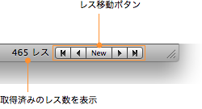

特定のレスに移動する
特定のレスに移動する
ナビゲーションバーや「スレッド」＞「レスに移動」サブメニューを使用して、すばやく特定のレスに移動することができます。
ナビゲーションバー
ナビゲーションバーは、スレッドの下部に表示される領域です。

レス移動ボタンをクリックすると、先頭（またはひとつ前のブックマーク）・ひとつ前・新着・次・最後（または次のブックマーク）のレスにそれぞれ移動できます。
「レスに移動」サブメニュー
「スレッド」メニューの「レスに移動」サブメニューには、レス移動ボタンと同じ働きをするメニュー項目のほか、以下のような項目があります。
- 今日のレス
- 投稿日が今日のレスのうち、もっとも古いレスに移動します。
- 最後に読んだレス
- 前回スレッドを開いたとき、最後に表示していたレスに移動します。
- 最後から 50 レス手前
- スレッドの最後のレスから 50 レス前のレスに移動します。最新 50 レスを順に読み進めたいときに便利です。
「レス番号を指定…」を選択すると、レス番号を入力するための小さなダイアログが表示されます。レス番号を入力し、「移動」をクリックします。
ヒント：「レス番号を指定…」ダイアログは、/ キーを押すだけで表示できます。